Model Files
In the OMOA, subsystem software consists of components: Hardware Control Daemons, Assemblies, Sequencers, and Applications. Model files that provide information about the component and its interfaces are created for each of the components. This section describes the model files. The model files are named: component-model, command-model, publish-model, alarm-model, and subscribe-model. In addition, each subsystem has a single subsystem-model file and may have one or more $subsystem-icd-model files that contain additional information about the interface between two subsystems. Separate files were created (rather than one larger file) in order to keep the configuration files simpler and easier to type.
The following table shows the different types of model files and what they describe:
| Model File | Description |
|---|---|
| subsystem-model.conf | Contains high-level information about the subsystem that contains a group of components. There is one subsystem-model.conf file per subsystem. |
| component-model.conf | Contains high-level component information. There is one component-model.conf file per component. |
| command-model.conf | Describes the configuration commands the component supports. Also describes components and commands the component may send to other components. There is at most one command-model.conf file per component. |
| publish-model.conf | Describes events the component publishes using Event Services. There is at most one publish-model.conf file per component. |
| service-model.conf | Describes HTTP services provided or consumed by the component. The HTTP services themselves are described in OpenAPI files. |
| alarm-model.conf | Describes alarms the component publishes using the Alarm Service. There is at most one alarm-model.conf file per component. |
| subscribe-model.conf | Describes events the component subscribes to using Event Services. There is at most one subscribe-model.conf file per component. |
| $subsystem-icd-model.conf | Where $subsystem is the name of one of the other TMT subsystems, for example: IRIS-icd-model.conf. These files may contain additional information about the interface between the subsystem being defined and another subsystem (IRIS in this example). |
The component is only required to create a command-model.conf, publish-model.conf, alarm-model.conf, or subscribe-model.conf if it provides or uses the features described in the model files (i.e. if the component does not subscribe to events, then a subscribe-model.conf file is not needed).
Model files are text files written in a superset of JSON called HOCON, which provides syntactic sugar for writing JSON, but can be exported as pure JSON. In addition, most fields support GitHub style MarkDown as well as HTML tags. LaTeX math markup and UML are also supported (see below). In addition, it is possible to reuse certain repetitive definitions, such as those for events, commands and parameters by using the ref keyword in the model files to refer to another definition. The syntax is described below. Each type of model file has a schema which specifies the allowed structure of the contents within, including specifying the optional and required items, item types, allowed ranges, etc. The following sections describe each of the model files including necessary fields.
Markdown Support, Math, UML, Dot
In addition to using standard GitHub style MarkDown in descriptions, you can also insert LaTeX math formulas: Here is an example description text containing an inline math formula:
description = """
Here is an example using LaTeX math: $`\frac{d}{dx}\left( \int_{0}^{x} f(u)\,du\right)=f(x)`$.
And here is another: $`[x^n + y^n = z^n]`$.
“””
And this is the inline math formula displayed from the above input:
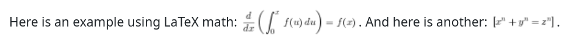
Block math formulas are delimited by
```math
```
For example:
Description = “””
Here is an example using LaTeX math: $`\frac{d}{dx}\left( \int_{0}^{x} f(u)\,du\right)=f(x)`$.
And here is another: $`[x^n + y^n = z^n]`$.
This is a math block:
```math
$$\idotsint_V \mu(u_1,\dots,u_k) \,du_1 \dots du_k$$
```
and another:
```math
\frac{n!}{k!(n-k)!} = \binom{n}{k}
```
and a matrix:
```math
A_{m,n} =
\begin{pmatrix}
a_{1,1} & a_{1,2} & \cdots & a_{1,n} \\
a_{2,1} & a_{2,2} & \cdots & a_{2,n} \\
\vdots & \vdots & \ddots & \vdots \\
a_{m,1} & a_{m,2} & \cdots & a_{m,n}
\end{pmatrix}
```
“””
The display for the above description is shown below:
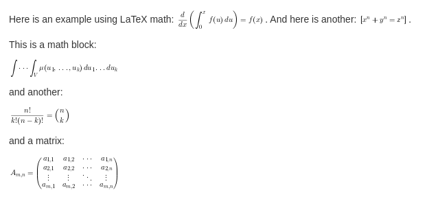
UML (PlantUML) and Graphviz Dot are also supported, delimited by
```uml
```
For example, below are some embedded UML blocks in a model file description text:
Description = “””
and a small one:
```uml
Bob -[#red]> Alice : hello
Alice -[#0000FF]->Bob : ok
```
Note that according to https://plantuml.com/dot you can also use Graphviz/Dot diagrams instead of UML:
```uml
digraph foo {
node [style=rounded]
node1 [shape=box]
node2 [fillcolor=yellow, style="rounded,filled", shape=diamond]
node3 [shape=record, label="{ a | b | c }"]
node1 -> node2 -> node3
}
```
"""
Below is the display produced from the above description text:
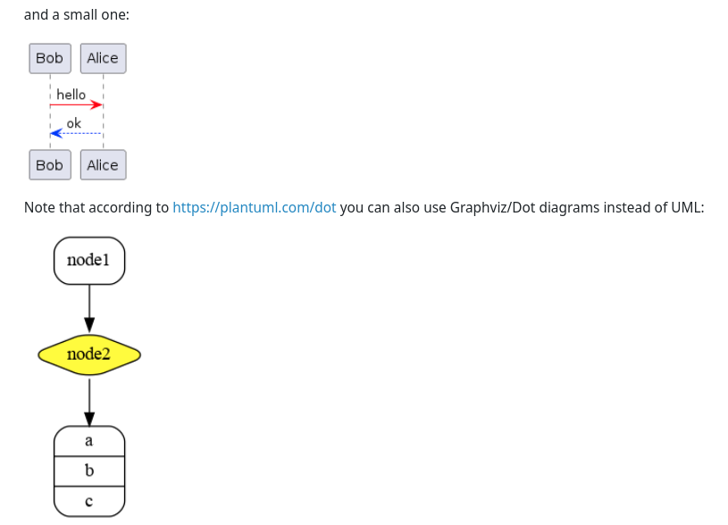
Inner-Document Links
It is possible to make inner-document links to existing anchors using Markdown syntax. The easiest way to see the syntax for the ids is to look at the generated HTML. For example, the output of:
icd-db -s NFIRAOS -o NFIRAOS.html
Note that the name attribute is used in the generated HTML instead of id, since the PDF generator required that. Many of the anchors have the following syntax:
thisComponent-action-itemType-subsystem.component.name
where
- thisComponent is the component being described
- action is one of {publishes, subscribes, sends, receives}
- itemType is one of {Event, ObserveEvent, Alarm, Command}
- subsystem is the subsystem for the item
- component is the component for the item
- name is the name of the item being published, subscribed to, or the command being sent or received
For example, to link to the description of a published event named heartbeat in the lgsWfs component in the TEST subsystem:
See: [here](#lgsWfs-publishes-Event-TEST.lgsWfs.heartbeat).
Reusing Definitions for Events, Commands, Parameters (refs)
It is possible to reuse similar parts of event, command and parameter definitions by using the ref keyword. The example below uses a reference to an event (engMode) in another event (engMode2):
events = [
{
name = engMode
description = "LGS WFS engineering mode enabled"
archive = false
parameters = [
...
]
}
{
name = engMode2
description = "LGS WFS engineering mode 2 enabled"
archive = true
ref = engMode
}
In the above example, the event engMode2 will have the same settings and parameters as engMode, except for description and archive, which are overridden. Any fields, which are not set, are inherited from the referenced event. This works for events, commands and parameters, as shown in the parameter reference example below:
parameters = [
{
name = mode3
ref = engMode/parameters/mode
}
In the above example, the parameter mode3 will be exactly the same as the mode parameter in the engMode event in the same component. You could also specify a different description field or any other parameter fields that should override the ones defined for mode.
The syntax of the ref value is flexible and allows you to reference any event, command or parameter in any component within the same subsystem. You can use a full path to specify a reference to an item in another component, or an abbreviated path for items in the same scope. The full syntax of a ref is something like this:
componentName/section/eventName[/parametersSection/paramName]
For example, to reference an event, observe event or current state, use:
- componentName/events/eventName
- or componentName/observeEvents/eventName
- or componentName/currentState/eventName
- or events/eventName, … (if in the same component)
- or just eventName (if in the same component and event type section) For commands received, the syntax is similar:
- componentName/receive/commandName
- or just commandName (if in the same component)
The syntax for references to parameters of events adds the parameters keyword and the parameter name:
- componentName/events/eventName/parameters/paramName
or abbreviated as described above for events:
- observeEvents/eventName/parameters/paramName (in same component)
- or eventName/parameters/paramName (in same component and events section)
Or just paramName (if in the same parameters section)
The syntax for parameters of commands is similar. Here you need to specify if the parameters appear in the “parameters” section or in the “resultType”.
- componentName/receive/commandName/parameters/paramName
- or componentName/receive/commandName/resultType/paramName
Or abbreviated as described above.
See the example model files in the icd sources for some examples of the ref keyword.
If there is an error in the reference, the error message is displayed in the log output of the icd-db command, if it is used, and also inserted in the generated HTML or PDF document (in the details section).
Below is an example that demonstrates some of the ref syntax for event parameters:
events = [
{
name = engMode3
description = "LGS WFS engineering mode enabled 3"
archive = true
parameters = [
{
// Example reference to a parameter in this component
name = mode3
ref = engMode/parameters/mode
}
{
// Example reference to a parameter in this component (using wrong ref to produce error in HTML/PDF output)
name = mode3Error
ref = engMode/parameters/modeXXX
}
Note: An earlier version of the icd software used the terms “attributes” for events parameters and “args” for command parameters. These have been renamed to “parameters” for compatibility with CSW, however for backward compatibility the previous names are also allowed in refs.
Using Jsonnet for Model Files
Normally, the icd model files are written in HOCON format, a simplified JSON format, and have a .conf suffix. In some cases, you may want to have more features available, for example to refer to similar definitions in may different places. The icd software also supports model files using the jsonnet data templating language, which lets you define variables and functions and reuse them. To do this, replace the .conf suffix with .jsonnet (or .libsonnet for jsonnet files you want to import) and follow the syntax rules for jsonnet, so that the resulting JSON, after being processed by jsonnet conforms to the icd JSON schema. The icd software will automatically preprocess the jsonnet model files when they are imported into the icd database.
For example, you can add some common, reusable, top level definitions in a file utils.libsonnet:
// Define a common event
{
heartbeat: {
name: 'heartbeat',
description: 'Heartbeat event description...',
parameters: [
{
name: 'heartbeat',
description: 'software heartbeat',
type: 'integer',
},
],
},
// Defines a function to generate a common event model based on the given arguments
commonEventFunc(eventName, paramName, typeName):: {
name: eventName,
description: eventName + ' description.',
archive: false,
parameters: [
{
name: paramName,
description: 'Description for ' + paramName,
type: typeName,
},
],
},
}
And then reference these definition in a publish-model.jsonnet file for a different component. Below is an example publish-model.jsonnet file that imports reusable jsonnet code:
// Import common function defined in another file
local utils = import '../utils.libsonnet';
{
subsystem: 'TEST',
component: 'jsonnet.example',
// comments can use // or #
publish: {
description: |||
Multi-line descriptions
use this syntax in jsonnet
|||,
events: [
// define two similar events using imported function
utils.commonEventFunc('myEvent1', 'param1', 'boolean'),
utils.commonEventFunc('myEvent2', 'param2', 'string'),
// Insert an imported event definition
utils.heartbeat,
// define another event
{
name: 'state',
// Import the description text
description: importstr '../importRaw.txt'
,
archive: false,
parameters: [
{
name: 'state',
description: 'Detector state',
enum: ['EXPOSING', 'READING', 'IDLE', 'ERROR'],
},
],
},
],
},
}
The above example defines two events (myEvent1 and myEvent2) that are similar, but configured based on the given function arguments. The heartbeat event is used as is. The state event is defined in the usual way (for JSON), but imports the description text from a file.
Subsystem-model
The subsystem model describes the overall subsystem. There is one subsystem-model.conf file for each subsystem.
Each subsystem may consist of several components. The IDBS merges them to create a subsystem API or ICD.
As an example, the subsystem-model.conf JSON schema file is shown below. This schema file is being shown for reference. Users are not expected to interact with the schema files directly, but rather use this manual to understand how to structure their model files.
subsystem-model.conf JSON schema:
id: "http://csw.tmt.org/subsystem-schema#"
"$schema": "http://json-schema.org/draft-07/schema#"
description = "Defines the model describing a top level subsystem"
type = object
additionalProperties: false
required = [modelVersion, subsystem, title, description]
properties {
_id {
description = "Optional unique id (automatically generated)"
type = string
}
_version {
description = "Optional version (automatically generated)"
type = integer
}
modelVersion {
description = "The version of the model file as Major.Minor version"
type = string
pattern = "^[0-9]+\\.[0-9]+$"
}
subsystem {
description = "The name of this Subsystem"
include classpath("3.0/subsystem.conf")
}
title {
description = "The title of this subsystem, for display"
type = string
}
description {
description = "A description of this subsystem"
type = string
}
}
The line starting with required = shows the required fields in the subsystem.conf file are: modelVersion, subsystem, title, and description. The following lines in the schema file describe each of the fields. Note also that modelVersion requires a pattern given by a regular expression. The modelVersion must be a value like Major.Minor with at least 1 digit on each side of the period such as 3.0 (The latest version).
The fields for subsystem.conf are shown in the table below. The field name, whether it is required, and any special notes for the field are shown. Notes include required formats or conventions for a value.
Required and optional fields for subsystem.conf:
| Field | Required? | Notes |
|---|---|---|
| modelVersion | yes | Must be a Major.Minor version with Major and Minor digits. Currently these values are supported: 1.0, 2.0, 3.0 (the latest version). |
| subsystem | yes | Name of the subsystem. Must be the same as SE subsystem name. |
| title | yes | The title of the subsystem. Will be displayed in generated documents. The title can contain spaces and other marks but should be one line. |
| description | yes | A description of the subsystem. The description is in triple quotes for multi-lined text. Note that spaces between paragraphs are retained and the text can contain GitHub flavored Markdown as well as HTML markup. |
The modelVersion is the model version for the entire subsystem. Each component also has a modelVersion field. This allows each component to be updated independently and then the subsystem to be updated as a whole.
The subsystem field is the subsystem name. It must be one of the subsystem abbreviations from the SE N2 document. The list is shown below.
// Enumeration including all available subsystems
enum = [
ENC, // Enclosure
SUM, // Summit Facilities
STR, // Structure
M2S, // M2 System
M3S, // M3 System
CLN, // Mirror Cleaning System
TINS, // Test Instruments
TCS, // Telescope Control System
M1CS, // M1 Control System
APS, // Alignment and Phasing System
OSS, // Observatory Safety System
ESEN, // Engineering Sensor System
NFIRAOS, // Narrow Field Infrared AO System
NSCU, // NFIRAOS Science Calibration Unit
LGSF, // Lasert Guide Star Facility
AOESW, // AO Executive Software
CRYO, // Cryogenic Cooling System
IRIS, // InfraRed Imaging Spectrometer
MODHIS, // Multi-Object Diffraction-limited High-resolution Infrared Spectrograph
REFR, // Refrigeration Control System
WFOS, // Wide Field Optical Spectrometer
CIS, // Communications and Information Systems
CSW, // Common Software
DMS, // Data Management System
ESW, // Executive Software System
SOSS, // Science Operations Support System
DPS, // Data Processing System
SCMS // Site Conditions Monitoring System
]
The example below will create a TCS subsystem. The description comes from the text of the TCS CoDR software design document. Triple quotes allow multi-line entries.
subsystem=TCS
title="TELESCOPE CONTROL SYSTEM (TCS)"
modelVersion="3.0"
description="""
The main functions of the TCS are:
1) Points and tracks targets in various reference frames by generating position demands for subsystems and instruments. Generates pointing models to remove repeatable mechanical errors and applies pointing models terms to correct mount demands.
2) Implements a key part in acquisition, guiding and wavefront sensing
…
"""
Optional $subsystem-icd-model file
There may be zero or more of these model files in the top level directory (which also contains subsystem-model.conf). Replace $subsystem with the name of the other subsystem that has an interface with the one being defined. For example, if you are defining the NFIRAOS subsystem model files and want to include extra information about the ICD between IRIS and NFIRAOS, you could add a file named IRIS-icd-model.conf:
subsystem = NFIRAOS
title = "Interface between NFIRAOS and IRIS"
description = """
The communication, software and control interfaces between NFIRAOS and IRIS consist of the following:
* Transfer of pixel compression gain and offset coefficients from the OIWFS detector controller to the NRTC.
* Transfer of pixel compression gain and offset coefficients from the IRIS Imager detector controller to the NRTC.
* Transfer of residual field rotation angle OIWFS from the NFIRAOS RTC to the IRIS SRO.
* Transfer of the IRIS OIWFS ADC ellipticity correction streams from the NFIRAOS RTC to the IRIS SRO. The corrections include the widths of the elliptical Gaussian image and angle between the ellipse axis and the local X axis.
* Transfer of the IRIS OIWFS pixels from the IRIS OIWFS detector controllers to the NFIRAOS RTC.
* Transfer of the IRIS ODGW pixels from the IRIS detector controllers to the NFIRAOS RTC.
* Transfer of probe position errors due to TT offloading from the NFIRAOS RTC to the IRIS SRO.
* Transfer of the NFIRAOS Optical Enclosure state to the OIWFS Enclosure.
* Bi-directional sharing of respective temperatures of NFIRAOS and OIWFS enclosures
* Transfer of NFIRAOS configuration, state, and performance information to the IRIS Data Reduction System (DRS).
"""
The fields in the $subsystem-icd-model.conf file are shown below:
| Field | Required? | Notes |
|---|---|---|
| subsystem | yes | Name of the subsystem being defined (same as in subsystem-model.conf) |
| title | no | Optional title to be displayed before the description (If missing, a default title will be used) |
| description | yes | Text describing the interface between the two subsystems (may include Markdown, HTML) |
| targetSubsystem | no | Name of the other subsystem that has an interface with this one (Defaults to the one in the file name) |
Component-model
There is one component-model.conf file for each component in the subsystem. The component model file provides high level information about the component. The fields of the component-model.conf are shown in the following table:
| Field | Required? | Notes |
|---|---|---|
| modelVersion | yes | This is the modelVersion for a single component. It must be a Major.Minor version with Major and Minor digits (1.0, 2.0 and 3.0 are currently supported). |
| subsystem | yes | Name of the subsystem the component belongs to. It must be an entry from the SE subsystem list. |
| wbsId | no | The WBS element from the cost book this component belongs to such as: TMT.TEL.CONT.TCS. |
| componentType | yes | Must be: Assembly, HCD, Sequencer, Application, or Container |
| component | yes | The name of the component. Will be displayed in documents. The component name may contain spaces and dots, but, as of modelVersion 2.0, not a dash “-“. The prefix for a component, which is needed to subscribe to events, is defined as subsystem.component. |
| title | yes | The title of the component. Will be displayed in documents. The title can include spaces but should be one line. |
| description | yes | A description of the component (may contain Markdown or HTML markup). The description is in triple quotes for multi-lined text. Note that spaces between paragraphs are retained. |
An example component-model.conf file (for the TCS Pointing Kernel Assembly, described in the TCS CoDR WBS) is shown below:
subsystem = TCS
component = TCS PK Assembly
modelVersion = "3.0"
wbsId = tmt.tel.cont.tcs.tpk
title = "Telescope Pointing Kernel Assembly"
componentType = Assembly
description = """
Pointing Kernel Assembly is responsible for receiving target and offset commands. Based on targets received assembly will produce stream of target demands that will be used by
tracking mechanism in Mount,Enclouser,Rotator,Guiders,Probes etc. Pointing Kernel Assembly utilizes C++ based third party libraries like tpk,slalib,tcspk.
"""
The icd-db program can output a document in PDF or HTML format with the –o option. The figure below shows a portion of the PDF output related to the above component-model.conf file:
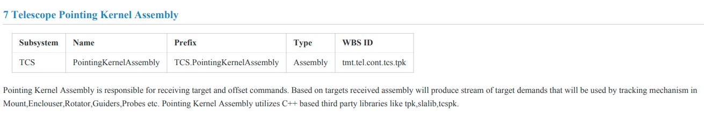
Parameters, Types and Units
The following two sections describe events and commands, both of which can have sets of parameters. A parameter can have a number of fields defined in the file parameter-schema.json. Minimally, it must be a name, description, and type or a name, description, and enum (enumeration). Parameter fields are described in the table below. Parameter field names must be unique within an event item.
The table below lists the set of required fields for parameters. Note that yes/no here means that one of type or enum is required, but both are not possible in the same parameter.
| Field | Required? | Notes |
|---|---|---|
| name | yes | The name of a parameter in the enclosing item. |
| description | yes | A text description of the parameter. |
| type | yes/no | The type of a value or array. Can be one of: array, boolean, integer, string, byte, short, long, float, double, taiTime, utcTime, eqCoord, solarSystemCoord, minorPlanetCoord, cometCoord, altAzCoord, coord (corresponding to supported types in the CSW software: See below). |
| enum | yes/no | An enum as in enum = {A, B} |
Other fields can be optionally added to the parameter as needed, depending on the type of parameter. For values that have units, the units must be one of the allowed CSW units (see below).
| Field | Required? | Notes |
|---|---|---|
| units | yes if possible | The units of a value in a parameter. See below for allowed values. |
| minItems | no | If the parameter is a one-dimensional array, this specifies the minimum number of items in the array. Can also be specified using the dimensions field for arrays types (see below). |
| maxItems | no | If the parameter is a one-dimensional array, this specifies the maximum number of items in the array. Can also be specified using the dimensions field for arrays types (see below). |
| minLength | no | For string parameters, the minimum expected string length. |
| maxLength | no | For string parameters, the maximum expected string length. |
| dimensions | no | If the parameter value is a multi-dimensional array, this is an array of dimension sizes for the value. |
| minimum | no | When a value can be a range, this is the minimum possible (a number or -inf). |
| maximum | no | When a value can be a range, this is the maximum possible (a number or inf). |
| exclusiveMinimum | no | When a value can be a range, this is the minimum possible, exclusive of this value (a number or –inf). |
| exclusiveMaximum | no | When a value can be a range, this is the maximum possible, exclusive of this value (a number or inf). |
| default | no | This is the default value for the parameter, if there is one. |
| allowNaN | no | Set to true if the parameter value can be NaN (default: false) |
FITS Keywords
In addition to the above fields, event parameters may contain fields with information about the FITS keywords for which the parameter is the source:
| Field | Required? | Notes |
|---|---|---|
| keyword | no | This is the name of the FITS keyword generated from the parameter value. |
| channel | no | If the FITS keyword has multiple source parameters, this specifies the channel name for this source. |
| keywords | no | Use if multiple FITS keywords are produced from this event parameter (See below). |
For the keywords field in the above table: If multiple keywords are produced from an event parameter (from different parts of an array or matrix), this form can be used:
keywords: [
{
keyword = OIWFS1PS
rowIndex = 0
}
{
keyword = OIWFS2PS
rowIndex = 1
}
{
keyword = OIWFS3PS
rowIndex = 2
}
]
In this format, rowIndex refers to a row in a matrix parameter value, while index refers to an index in the parameter value array.
Parameter Types
The table below lists the available types for parameters, which correspond to the supported parameter types in the CSW framework. Note that a parameter in CSW can always have multiple values. It is not necessary (or supported) to define an array of strings or booleans, since a string or boolean parameter can already have multiple values.
| Type | Description |
|---|---|
| boolean,integer, string, byte, short, long, float, double | Values have the corresponding primitive types in Scala, Java, Typescript, etc. |
| array | An array or matrix of (lists of) numerical values (not string or boolean) |
| taiTime, utcTime | Holds TAI or UTC time values |
| EqCoord, solarSystemCoord, minorPlanetCoord, cometCoord, altAzCoord, coord | See the CSW source for details of these coordinate parameter types. Note that coord (CSW Coord) is a base type that can be used for any of the coordinate types. |
If the parameter type is an array, there are some special tags for describing it. The minItems and maxItems parameters can be used for 1-Dimensional arrays and is especially useful for arrays with a variable length. However, for other arrays, including higher dimensional arrays, a dimensions tag can be used, with a syntax of [x,y,z,…] where x, y, and z are positive integers specifying the size of each dimension. Note that the CSW framework only supports numerical array and matrix types, although each item of the array or matrix can be a list of one or more values.
To describe the items in an array, an “items” block is used. Within it, the type is set using the type field. The mimimum, maximum, exclusiveMinimum, and exclusiveMaximum fields may be used as well.
In the CSW framework, only numerical array parameter types are supported, however since every parameter may have multiple values, it is usually not necessary to declare the type as an array.
Note that the value of the mimimum, maximum, exclusiveMinimum, and exclusiveMaximum fields may be numeric or “inf” or “-inf” (for +/- infinity).
Units
The CSW software defines a list of standard units that are accepted. If not in this list, please add it to the description field and/or request that it be added to the standard list.
Note: This list can be found in the icd source tree under icd-db/src/main/resources/3.0/units.conf
// Enumeration including all available CSW units
enum = [
// SI units
angstrom // angstrom
alpha // alpha: fine structure constant
ampere // ampere: unit of electric current
arcmin // arc minute; angular measurement
arcsec // arc second: angular measurement
bar // bar: metric ton of pressure
candela // candela(lumen/sr)
day // day
degree // degree: angular measurement 1/360 of full rotation
degC // Degree Celsius K
degF // Fahrenheit
elvolt // electron volt
gauss // gauss
gram // gram
hertz // frequency
henry // Henry
hour // hour
joule // Joule: energy
kelvin // Kelvin: temperature with a null point at absolute zero
kilogram // kilogram, base unit of mass in SI
kilometer // kilometers
liter // liter, metric unit of volume
lm // lumen
lsun // solar luminosity
lx // lux(lm/m2)
mas // milli arc second
me // me(electron_mass)
meter // meter: base unit of length in SI
microarcsec // micro arcsec: angular measurement
millimeter // millimeters
millisecond // milliseconds
micron // micron: alias for micrometer
micrometer // micron
minute // minute
MJD // Mod. Julian Date
mol // mole- unit of substance
month // Month name or number
mmyy // mmyy: Month/Year
mu0 // mu0: magnetic constant
muB // Bohr magneton
nanometer // nanometers
newton // Newton: force
ohm // Ohm
pascal // Pascal: pressure
pi // pi
pc // parsec
ppm // part per million
radian // radian: angular measurement of the ratio between the length of an arc and its radius
second // second: base unit of time in SI
sday // sidereal day is the time of one rotation of the Earth
steradian // steradian: unit of solid angle in SI
volt // Volt: electric potential or electromotive force
watt // Watt: power
Wb // Weber
week // week
year // year
// CGS units
coulomb // coulomb: electric charge
centimeter // centimeter
D // Debye(dipole) A electric dipole moment
dyn // dyne: Unit of force
erg // erg: CGS unit of energy
// Astropyhsics units
au // astronomical unit: approximately the mean Earth-Sun distance
a0 // bohr radius: probable distance between the nucleus and the electron in a hydrogen atom in its ground state
c // c: speed of light
cKayser // cKayser
crab // Crab: astrophotometrical unit for measurement of the intensity of Astrophysical X-ray sources
damas // damas: degree arcminute arcsecond (sexagesimal angle from degree)
e // electron charge
earth // earth (geo) unit
F // Farad: F
G // gravitation constant
geoMass // Earth Mass
hm // hour minutes (sexagesimal time from hours)
hms // hour minutes seconds (sexagesimal time from hours)
hhmmss // hour minutes seconds (sexagesimal time)
jansky // Jansky: spectral flux density
jd // Julian Day
jovmass // Jupiter mass
lightyear // light year
mag // stellar magnitude
mjup // Jupiter mass
mp // proton_mass
minsec // minutes seconds (sexagesimal time from minutes)
msun // solar mass
photon // photon
rgeo // Earth radius (eq)
rjup // Jupiter Radius(eq)
rsun // solar radius
rydberg // energy of the photon whose wavenumber is the Rydberg constant
seimens // Seimens
tesla // Tesla
u // atomic mass unit
// Imperial units
barn // barn: metric unit of area
cal // thermochemical calorie: pre-SI metric unit of energy
foot // international foot
inch // international inch
pound // international avoirdupois pound
mile // international mile
ounce // international avoirdupois ounce
yard // international yard
// Others - engineering
NoUnits // scalar - no units specified
bit // bit: binary value of 0 or 1
encoder // encoder counts
count // counts as for an encoder or detector
mmhg // millimetre of mercury is a manometric unit of pressure
percent // percentage
pix // pixel
// Datetime units
tai // TAI time unit
utc // UTC time unit
date // date
datetime // date/time
]
Parameter Examples
Below are some examples of parameter definitions:
parameters = [
{
name = temp_ngsWfs
description = "NGS WFS temperature"
type = float
units = kelvin
exclusiveMinimum: -inf
exclusiveMaximum: inf
allowNaN: true
keyword = IMGTMPXX
}
{
name = temp_lgsWfs
description = "LGS WFS temperature"
type = float
units = kelvin
exclusiveMinimum: 0
exclusiveMaximum: 100
allowNaN: true
}
{
name = temp_ndme
description = "NDME crate temperatures"
type = array
dimensions: [7]
items = {
type = float
units = kelvin
}
}
{
name = temp_actuator
description = "motor & piezo actuator temperatures"
type = array
dimensions: [30]
items = {
type = float
minimum = 1.234
units = kelvin
}
}
]
Publish-model
Each component can publish events, observe events, images and current state. Other systems can subscribe or get these. A component’s published events and images are described in the publish-model.conf file. The file consists of some high-level content and then sections for events, observeEvents, images and currentState.
As per Change Request 261, the telemetry and event services have been merged into one unified service, and telemetry items distinct from events have been eliminated. Furthermore, events and event streams have also been consolidated into a single event type.
The table below lists the required and optional fields for publish-model.conf:
| Field | Required? | Notes |
|---|---|---|
| subsystem | yes | Name of the subsystem. Must be the same as SE subsystem name. Should be the same as the component-model.conf and subsystem-model.conf |
| component | yes | The name of the component. |
| publish | yes | This is a container for the kinds of data the system publishes. It is required. |
The publish block contains a description and then containers for the different kinds of publishable events. The table below lists the fields for the required publish block:
| Field | Required? | Notes |
|---|---|---|
| description | no | Optional overview or notes on items published by the component. |
| events | no | Block for events that are published by the component |
| observeEvents | no | Block for observe events that are published by the component. There is a list of predefined observe events (see below). |
| images | no | Block for images that are published by the component. |
| currentStates | no | Block for current states that are published by the component. |
| alarms | no | Block for alarms published by the component (Deprecated: See alarm-model.conf below). |
Note that the publish-model.conf file is not required if the container does not publish any events or . Note also that none of the fields of the publish container are required. Adding a publish-model.conf file to the component model that is empty will create an empty section in the documentation (In that case it would be preferable to leave out the publish-model.conf file). The following tables discuss each of the different kinds of events.
Events
The event container is an array containing one or more event items.
Events fall into the following categories. The purpose of the categories is to easily find events of different categories without a catalog.
| Category | Description |
|---|---|
| DEMAND | An event that is used to transmit a desired position. These events are high frequency/periodic and should not be archived long-term or should be seriously curated into a smaller representative collection. |
| CONTROL | Similar to a DEMAND, but probably not periodic and considerably less frequent. CONTROL events are events driving other devices, but may be internal to a system. These also may be curated. |
| EVENT | An event that is used to indicate that something has happened. Observe Events are one EVENT type. |
| STATUS | (Default) Used primarily to update a user interface. These events are archived. They are not high frequency and are not periodic. |
The fields of an event item are shown in the table below:
| Field | Required? | Notes |
|---|---|---|
| name | yes | The name of the event item. This should be a simple name like “zenithAngle”. The prefix for all events is subsystem.component. |
| category | no | The event category (One of: DEMAND, CONTROL, EVENT, STATUS). |
| description | no | An optional description of a single event item (may contain Markdown and HTML). The description is in triple quotes for multi-lined text. Note that spaces between paragraphs are retained. |
| requirements | no | List of requirements that flow to this item. |
| maxRate | no | Maximum publishing rate in Hz. |
| archive | no | A Boolean (true/false) stating whether the component recommends archiving this eventitem. |
| archiveDuration | if archive is true | Lifetime of the archiving (for example ‘2 years’ or ‘6 months’) |
| parameters | yes | A container of parameters that belong to this event item. |
Unlike an EPICS channel, a CSW event can contain several associated keys and values (called parameters in the schema).
An excerpt from an example publish-model.conf file for the TCS pk Assembly is shown below. It shows part of the definition of the zenithAngle event.
publish {
event = [
{
name = zenithAngle
description = """
|The zenith angle is the distance in degrees of the telescope's optical axis from the zenith.
|
|The zenithAngle event item includes both the zenith angle for the current position of the
|telescope
|as well as the demanded zenith angle. When the telescope is tracking, the error between
|demand and current should be zero.
|"""
requirements = [“REQ-2-TCS-4270”]
maxRate = 20
archive = true
archiveDuration = 1 year
parameters = [
{
name = current
description = "Actual or current zenith angle of the telescope"
type = float
minimum = 0
maximum = 90
units = degree
}
{
name = demand
description = "The demanded zenith angle of the telescope"
type = float
minimum = 0
maximum = 90
units = degree
}
]
}
The annotated screenshot below shows the portion of the file generated by the command: icd-db -s TCS –o TCS.pdf, which generates a PDF file for the TCS subsystem. The figure shows where each of the fields ends up on the final product.
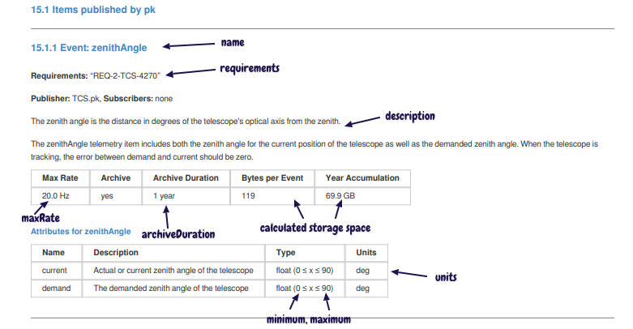
Observe Events
Observe events are different from other events in that they are predefined. For this reason you only need to list the name of the observe event in the publish model file under observeEvents. For example:
observeEvents = [
ObserveStart
ObserveEnd
]
The predefined observe event names are references to the tmt-icd/ESW-Model-Files definitions on GitHub.
Below is an example that references all the predefined observe events:
observeEvents = [
ObserveStart
ObserveEnd
ExposureStart
ExposureEnd
ReadoutEnd
ReadoutFailed
DataWriteStart
DataWriteEnd
ExposureAborted
PrepareStart
// IRDetector specific
IRDetectorExposureData
IRDetectorExposureState
// OpticalDetector specific
OpticalDetectorExposureData
OpticalDetectorExposureState
// WFSDetector specific
WfsDetectorExposureState
PublishSuccess
PublishFail
// Sequencer specific
PresetStart
PresetEnd
GuidestarAcqStart
GuidestarAcqEnd
ScitargetAcqStart
ScitargetAcqEnd
ObservationStart
ObservationEnd
ObservePaused
ObserveResumed
DowntimeStart
// DMS specific
MetadataAvailable
ExposureAvailable
]
Images
The images section of the publish-model.conf file is used to declare that a component publishes images that other components can subscribe to (via the TMT VIZ APIs that are to be defined).
The images container is an array containing one or more image description items. The fields of an image item are shown in the following table:
| Field | Required? | Notes |
|---|---|---|
| name | yes | The name of the image item. This should be a simple name like “guider1”. The prefix for all images is subsystem.component. |
| description | yes | A description of a single image item (may contain Markdown and HTML). The description is in triple quotes for multi-lined text. |
| channel | yes | The VIZ image channel (for example: viz.wfos.agwfs1) |
| format | no | The image format (default: FITS) |
| size | yes | An array of two numbers: the image dimensions (for example: [2048, 2048]]) |
| pixelSize | yes | Number of bytes per pixel |
| maxRate | no | Maximum rate the image is published |
| metadata | yes | A container of one or more metadata items that belong to this image. |
The format of a single metadata item for an image is shown in the table below:
| Field | Required? | Notes |
|---|---|---|
| name | yes | Name of the image metadata |
| description | yes | A description of this metadata |
| type | yes | The data type of the keyword value (One of: [boolean, integer, string, byte, short, long, float, double]) |
| keyword | no | FITS keyword (for example: SCALE, ITIME) |
Below is an example section of a publish-model.conf file that shows two published images. Other components can then reference these images in the subscribe-model.conf file to indicate that they will subscribe to the published images.
images = [
{
name = guider1
description = "Images from the WFOS AGWFS 1"
channel = viz.wfos.agwfs1
format = FITS
size = [2048, 2048]
pixelSize = 2
maxRate = 5.0
metadata = [
{
name = platescale
type = float
description = "platescale of image in arcsec/pixel"
keyword = SCALE
}
{
name = integrationTime
type = integer
description = "integration time of image in ms"
keyword = ITIME
}
]
}
{
name = guider3
description = "Images from the WFOS AGWFS 3"
channel = viz.wfos.agwfs1
format = FITS
size = [2048, 2048]
pixelSize = 2
maxRate = 5.0
metadata = [
{
name = platescale
type = float
description = "platescale of image in arcsec/pixel"
keyword = SCALE
}
{
name = integrationTime
type = integer
description = "integration time of image in ms"
keyword = ITIME
}
]
}
]
Other Event Types
Some events signal an occurrence of an activity in a component that other systems use to synchronize actions. Some, like observe events, are system defined. They are not periodic, so a rate is not necessary. The publish-model.conf file has a container for events the component publishes that includes an array of one or more events.
Current states, which are published by HCDs for assemblies, are not actually events, but are structured the same, and written in the currentStates block instead of the events block.
Events and current states have the same schema, with a name, description, and parameters describing the event data. Below is an example current state event described in the publish-model.conf file:
currentStates = [
{
name = "nacqUnarchived"
archive = false
parameters = [
{
name = nacq_detector_state
description = "current state of the NACQ detector"
enum = [EXPOSING, READING, IDLE, ERROR]
}
{
name = nacq_period
description = "NACQ continuous read period"
type = float
units = seconds
}
{
name = nacq_contRead
description = "NACQ continuous read state enabled"
type = boolean
}
{
name = nacq_mag_position
description = "NACQ magnifier stage motor position"
type = float
// units = TBD
}
{
name = nacq_position
description = "nominal position of the NACQ/NHRWFS stage for the NACQ "
// array of 3 floating point numbers in mm
type = array
dimensions: [3]
items = {
type = float
}
units = mm
}
]
}
The screenshot below shows part of the PDF display for the above CurrentStates example:
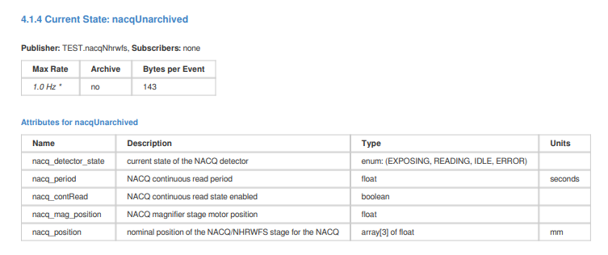
Service Model File
Another optional icd model file is service-model.conf. It is used to describe HTTP services provided by or consumed by a component. The actual HTTP services are described in OpenAPI files that are also stored in the icd database.
On the consumer side, the file can indicate which routes of the HTTP service it uses.
Here is an example consumer service-model.conf:
subsystem = TEST
component = env.ctrl
requires = [
{
subsystem = TEST2
component = SegmentService
name = esw-segment-db
// Optional routes / paths used
paths = [
{
path = /setPosition
method = post
},
{
path = /currentPositions
method = get
}
]
}
]
The above example states that the component uses the HTTP methods POST /setPosition and GET /currentPositions from the service. The paths are optional and just for information. The generated documentation for an ICD between two subsystems or components will only display the parts of HTTP services that are declared as being used (in the paths array). By default, if the paths are not specified, the complete service API will be included in the ICD documentation.
In the example service-model.conf file from a service provider below, the line:
openApi = esw-segment-db.json
points to the OpenAPI definition for the HTTP service that is being provided (The OpenAPI file should be in the same directory as the service-model.conf file and can be in JSON or YAML format and have the suffix .json, .yaml or .yml). Both the service-model information and the contents of the OpenAPI file are stored in the icd database where they are used to produce documentation (YAML files are first converted to JSON).
service-model.conf:
subsystem = TEST2
component = SegmentService
provides = [
{
name = esw-segment-db
description = "HTTP API to ESW Segment DB service, used for keeping track of TMT mirror segments"
openApi = esw-segment-db.json
}
]
The screenshot below shows how the above service provider info is displayed in the icd web app:
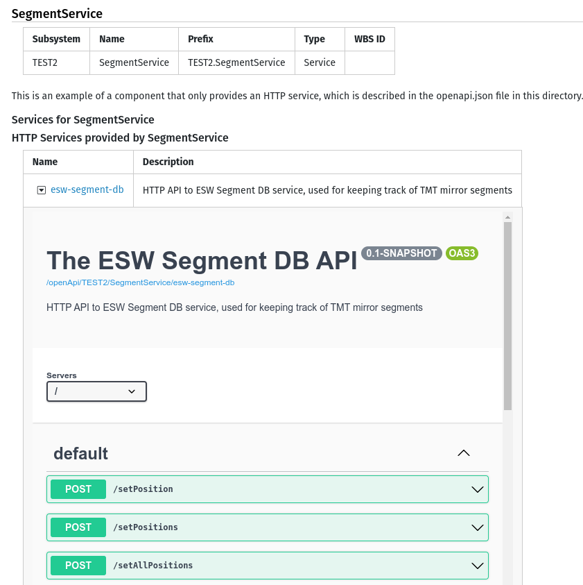
If you click on the small button in the Name column, the detailed display is toggled open or closed. If you click on the link next to it, the documentation for the HTTP service is opened in a new tab. The format of the documentation for HTTP services is different from that of events, since it is provided by the swagger-ui library. The PDF version is somewhat simpler and is provided by the swagger-codegen command line application.
Note that each component can declare multiple services consumed and/or provided in the service-model.conf file. You can find example service-model.conf files and OpenAPI files in the examples/3.0 directory in the icd sources.
Alarms
An alarm is published to mark an abnormal condition that requires attention. Alarms are not errors; they are conditions that occur asynchronously while components are executing or inactive.
The alarm feature has been redesigned for the CSW PDR in response to CoDR comments. The structure of the model follows the design of the Alarm Configuration file, which provides a listing of all possible alarms within the Observatory, as well as information for the operator to respond to the alarm.
The table below lists the required and optional fields for an alarm definition in alarm-model.conf:
| Field | Required? | Notes |
|---|---|---|
| name | yes | Name of the alarm, which should be one word. |
| description | yes | A description of the alarm including what is the cause and possible response. The description is in triple quotes for multi-lined text. Note that spaces between paragraphs are retained. |
| requirements | no | List of requirements that flow to this alarm |
| severityLevels | yes | An array of severity levels that the alarm can have (besides Disconnected, Indeterminate, Okay): Default is any severity. Possible values are: Warning, Major, Critical. |
| location | yes | A text description of where the alarming condition is located |
| alarmType | yes | The general category for the alarm: One of: Absolute, BitPattern, Calculated, Deviation, Discrepancy, Instrument, RateChange, RecipeDriven, Safety, Statistical, System |
| probableCause | yes | The probable cause for each level or for all levels |
| operatorResponse | yes | Instructions or information to help the operator respond to the alarm |
| autoAck | yes | Does this alarm automatically acknowledge without operator? |
| latched | yes | Does this alarm latch? |
Below is an example alarm-model.conf file:
subsystem = TEST
component = env.ctrl
alarms = [
{
name = limit
description = "The NGS FSM stage has reached a limit. It is not possible to position the FSM."
requirements = [TBD]
severityLevels = [Major]
location = "NGS FSM stage"
alarmType = System
probableCause = "The PFSM HCD was commanded without the knowledge of the assembly, or the configured soft limits are incorrect"
operatorResponse = "Execute the datum command"
autoAck = false
latched = true
}
]
The PDF output generated from this part of the alarm-model.conf file is shown below:
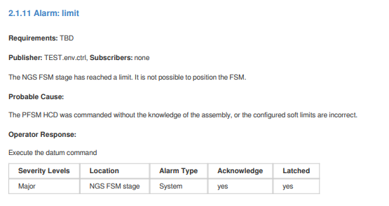
In previous icd versions, the alarms were listed in the publish-model.conf file and this is still supported for backward compatibility.
Subscribe-model
The subscribe-model.conf file lists the event information a component subscribes to from other components. The subscribe-model.conf file is simpler than the publish-model.conf file, containing only references to the published items.
Like publish-model.conf, the subscribe-model.conf file includes sections for each of the kinds of events or images that are available: events, observeEvents, images and currentStates. Each section is an array of items with the same fields as shown in the table below. Only the subsystem, component, and name fields are required.
| Field | Required? | Notes |
|---|---|---|
| subsystem | yes | Name of the publisher’s subsystem. |
| component | yes | Name of the component publishing the item. |
| name | yes | The simple name of the item such as: zenithAngle. |
| usage | no | Describes how the item is being used by the subscriber |
| requiredRate | no | The rate the subscriber needs updates of the item in order to operate properly (in Hz). This may not be the rate that the publisher publishes. |
| maxRate | no | The maximum rate at which the subscriber can process the item (in Hz). |
Below is an example subscribe-model.conf file for an IRIS component called oiwfs_adc_assembly that uses the published data of the TCS.
subsystem = IRIS
component = oiwfs_adc_assembly
subscribe {
events = [
{
subsystem = TCS
component = cmIRIS
name = oiwfs1AtmDispersion
usage = "Atmospheric dispersion stream"
requiredRate = 1
}
{
subsystem = TCS
component = cmIRIS
name = oiwfs2AtmDispersion
usage = "Atmospheric dispersion stream"
requiredRate = 1
}
{
subsystem = TCS
component = cmIRIS
name = oiwfs3AtmDispersion
usage = "Atmospheric dispersion stream"
requiredRate = 1
}
{
subsystem = IRIS
component = oiwfs_poa_assembly
name = POS_current
usage = "Current OIWFS probe rotations needed to set correct ADC orientations"
}
{
subsystem = NFIRAOS
component = rtc
name = oiwfsImage
usage = "OIWFS ellipticity correction stream for ADCs"
}
]
}
Here is another example subscribe-model.conf that also subscribes to a published image stream:
subscribe {
events = [
{
subsystem = TEST
component = lgsWfs
name = engMode
}
]
// Components can also subscribe to VIZ image streams
images = [
{
subsystem = TEST
component = lgsWfs
name = guider1
usage = "WFOS guider images use for acquisition"
}
]
}
Events have been redesigned for the CSW PDR. Components write their data and other systems sample it at the rate they need. requiredRate allows a component to state a rate they require to operate properly. It’s up to the publisher to make sure that they can provide that rate. This is part of checking interfaces.
There is minimal documentation for subscribe items. The full description of an item belongs with the publisher, not the subscriber. The subscriber is only referencing its use of information published by another component.
The name field must match the name of published item in another component. It must be spelled correctly. The best way is to browse the API of the source system and copy the full path.
By default, subscribed events are not displayed in API documents. To include them, pass the –clientApi option to icd-db, or select the Include client API information check box in the web app.
The figure below shows a section of the display of the icd web app for the above subscribe-model.conf file. The descriptions are looked up in the database (originally from publish-model.conf files in other components).
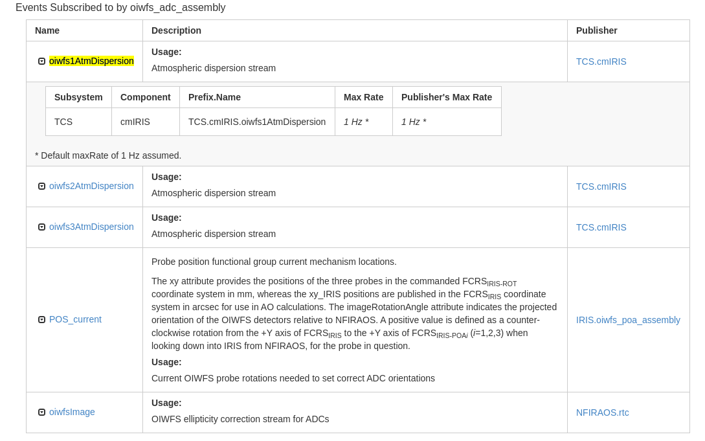
See also the example subsystems in the icd GitHub repo that show the different types of events and images used in the subscribe-model.conf files.
Command-model
The command-model.conf file describes the submit commands the component accepts (receive) and the submit commands it sends to other components it depends on (send). As in other sections, there is a block for the send and receive entries. The required and optional fields of command-model.conf are shown in the table below:
| Field | Required? | Notes |
|---|---|---|
| subsystem | yes | Name of the subsystem. Must be the same as SE subsystem name. |
| component | yes | Name of the component that uses this command-model.conf file. Should match name used elsewhere. |
| receive | yes | The block for commands this component supports. |
| description | no | An optional overall description of the commands received by the component. The description is in triple quotes for multi-lined text. |
| send | no | The block for commands this component sends to other components. |
The receive block holds an array of items that are descriptions of commands the component receives or accepts.
The required and optional fields of the receive block are shown in table below.
| Field | Required? | Notes |
|---|---|---|
| name | yes | Name of the command (appended to prefix). |
| description | yes | A description of the command. |
| requirements | no | A list of one or more TMT requirements that are associated with this command. |
| preconditions | no | List of preconditions for this command, including safety.precautions. Unless otherwise documented, it is assumed that the conditions ALL need to be met. |
| postconditions | no | List of postconditions for this command, including safety precautions. Unless otherwise documented, it is assumed that the conditions ALL need to be met. |
| requiredArgs | no | A list of command arguments (parameters) that are required. |
| parameters | no | The block for arguments the command supports. Parameters are as described for events. |
| completionType | no | Indicates the completion type of a command: See CSW CommandService API for details. Possible values: immediate, longRunning, oneway (default: immediate). |
| resultType | no | Defines a list of parameters in the result (For commands that return a result) in the same format as the command parameters. |
| completionCondition | no | For oneway commands, a list of conditions (string text) for determining command completion (if applicable). Unless otherwise documented, it is assumed that the conditions ALL need to be met. |
| role | no | The user role required in order to execute this command (one of: eng, admin or user). Some commands may be protected and only allowed for engineering or admin users. The default required role is a regular user role. |
The contents of the parameters and resultType containers are parameters as described for events in a previous section.
The send block contains a list of commands this component sends to other components. The required fields for each item in the list are shown in the following table.
| Field | Required? | Notes |
|---|---|---|
| subsystem | yes | The TMT subsystem for the component that receives the command |
| component | yes | Name of the component that receives the command. Should match name used elsewhere. |
| name | yes | name of the command |
An example of the beginning and the receive block from a command-model.conf file for is shown below.
subsystem = TEST
component = lgsWfs
description = "Example Commands …"
receive = [
{
name = LGS_WFS_INITIALIZE
description = """
|LGS_WFS_INITIALIZE command will:
|* disable the LGS WFS engineering continuous read mode (if required)
|* (re)connect to the LGS WFS HCD
|* set LGS WFS exposure parameters to default values
"""
requirements = ["INT-TEST-AOESW-1000"]
parameters = [
{
name = wfsUsed
description = "OIWFS used"
type = string
}
]
completionType = oneway
completionCondition = [
"List of conditions to meet for oneway command to be complete...",
"condition two",
"condition three"
]
}
]
The resulting PDF display for the above model file is shown in the screenshot below.
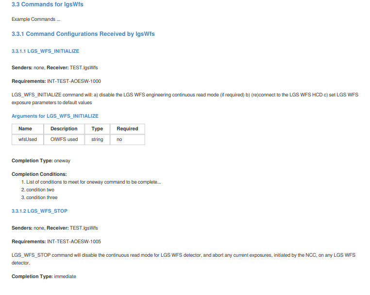
The send container documents the configuration commands one component sends to another. This allows mapping the command flow in the system and dependencies between components. The name of the configuration command, the component and the subsystem are enough to identify the destination of the configuration command.
The example send container section of the command-model.conf file for the TCS Corrections assembly is shown below.
send = [
//*******
// cabinet-environment assembly
{
name = GLY_init
subsystem = IRIS
component = cabinet_environment_assembly
}
{
name = GLY_test
subsystem = IRIS
component = cabinet_environment_assembly
}
{
name = TEMP_init
subsystem = IRIS
component = cabinet_environment_assembly
}
{
name = TEMP_test
subsystem = IRIS
component = cabinet_environment_assembly
The generated HTML output from the above send section of the command-model.conf file is shown below. The description and other details are taken from the publish information in the database.
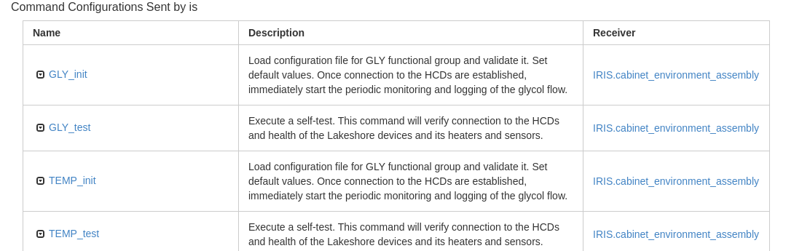
By default, sent commands are not displayed in API documents. To include them, pass the –clientApi option to icd-db, or select the Include client API information check box in the web app.